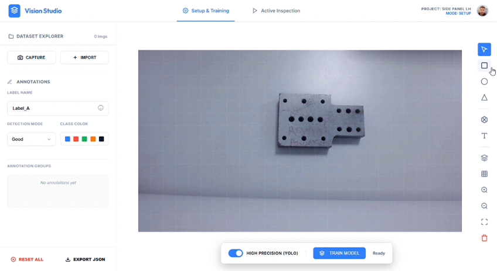
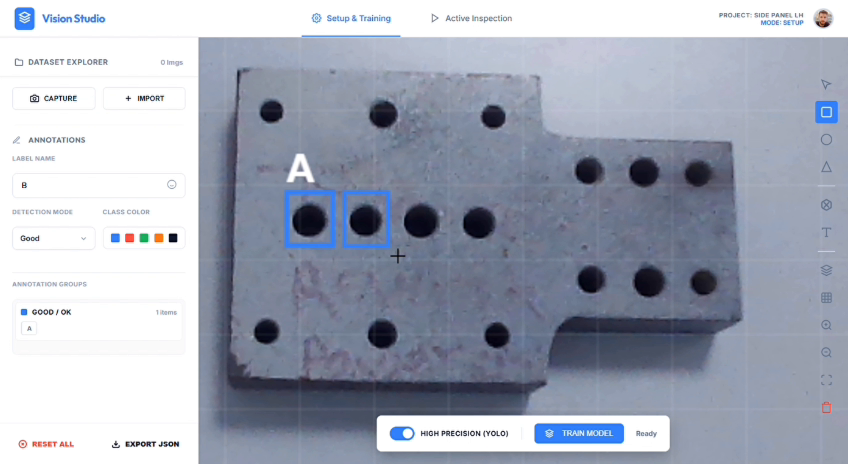
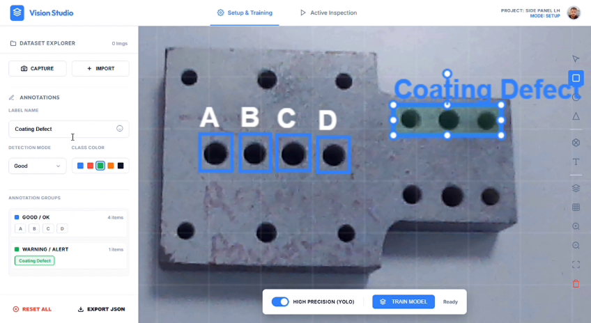
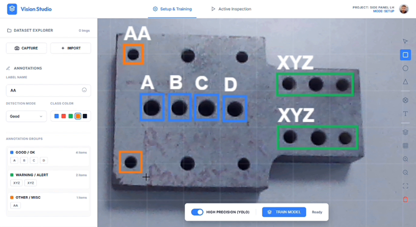

Vision_Studio_Pro
A mission-critical Machine Vision suite integrating low-latency neural processing with industrial PLC communication for high-speed manufacturing lines.
System_Core_Specs
Quick Shortcuts
Module_01: Vision_Inspector
The training and configuration engine. Designed to allow non-experts to define complex ROI (Region of Interest) states using a library of pre-trained component templates.

// 01: System Launcher
The entry point for Vision Studio Pro. Allows for seamless switching between different production projects and secondary tools like the Communicator or Diagnostic tools.

// 02: Main Workspace
Real-time template defining workspace. Engineers can drag-and-drop ROI boxes, set sensitivity thresholds, and verify detection accuracy against various lighting conditions.

// 03: Precision Training
Detailed inspection configuration. This view shows the live feedback loop while adjusting parameters for specific component shapes and orientations.

// 04: Component_States
A centralized library for multi-state classification. Allows defining what constitutes a "PASS" vs. a "FAIL" (e.g., missing screw vs. loose assembly) across different product variations.
Module_02: Industrial_Communicator
The bridge between Vision results and Industrial Hardware. Communicator handles high-frequency handshakes with Rockwell and Modbus PLCs to trigger inspection cycles.

// 01: Live_Monitor // PLC_Sync
Real-time status monitor showing the handshake loop between the Vision Engine and the factory floor PLC. Displays current bit states and inspection trigger feedback.

// 02: Program_Mapping_Logic
Dynamic mapping of PLC program IDs to specific Vision templates. Allows the factory logic to tell the camera exactly which component it is looking at in any given cycle.
PLC_Integration
Low-latency driver supporting Rockwell (EtherNet/IP) and Modbus TCP. Automated tag discovery and real-time polling ensure zero-delay synchronization with robot cell cycles.

I/O Diagnostics
Built-in simulation mode allows engineers to test handshake logic without live hardware. Full bit-level visualization of In/Out signals from the computer to the factory floor.

Technical_Architecture
Frontend / UX
Clean, modern UI built with **Tailwind CSS** and **PySide6**. Interactive workspace wrapped in **PyWebView** for native experience.
Handshake Engine
Asynchronous PLC driver using **Pylogix** and **Pymodbus**. Real-time bit polling at < 100ms intervals.
Vision Kernel
Integrated **OpenCV** processing for template matching and ROI analysis with automated result serialization in JSON/CSV.